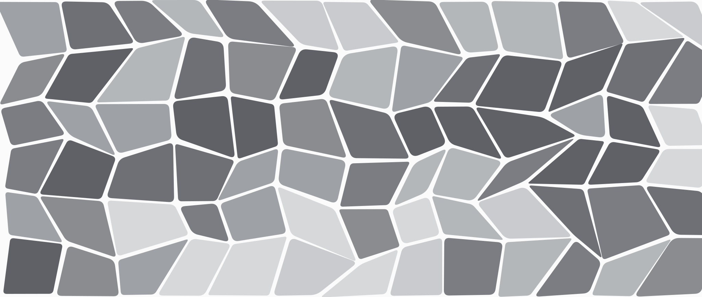

Open Tuesdays until 10 p.m.
Hagerstown's veterinarian, keeping care close to home.
Cumberland Valley Veterinary Clinic has been Hagerstown's privately owned, multi-doctor veterinary practice and pet resort for over 30 years.
📞 Call (301) 739-3121
We answer the phone. No portal, no phone tree.
